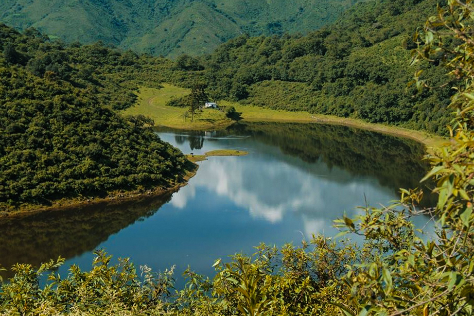
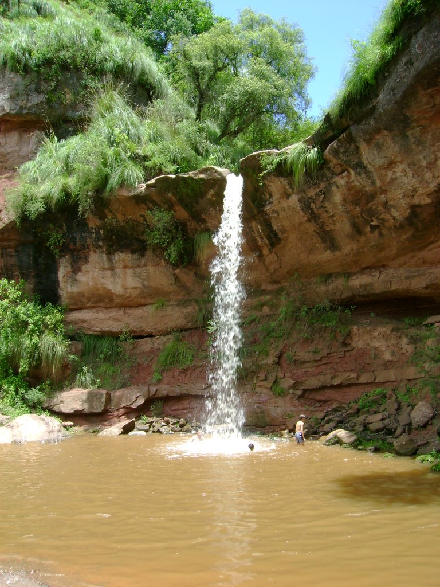

VALLES

La zona de los valles ocupa la región centro-sur de la provincia, donde se desperdigan lugares de ensueño con paisajes espectaculares y un clima de temperatura media, que la convierten en una zona de estación primaveral durante casi todo el año.
Entre verdes serranías, valles y lagunas, los alrededores se convierten en una excelente alternativa para vivir plenamente la naturaleza. Lugares como Termas de Reyes, ideal para disfrutar de sus aguas terapéuticas; las Lagunas de Yala, para distenderse en las serenas aguas de sus espejos, los pintorescos poblados de Ocloyas y Tiraxi, distribuidos en un entorno de variada y densa vegetación casi selvática, invitan al descanso y al sosiego en un marco de extraordinaria belleza natural.
Destinos

Angosto de Jaire
Coordenadas del destino:
-24.07795, -65.4150009
Es un pequeño cañón que parece un laberinto entre paredes de piedra y vegetación. El Angosto de Jaire está constituido por dos inmensas paredes de granito negro, atravesadas por el curso de un arroyo manso que repentinamente se transforma en una vertiente

Villa Jardin de Reyes
Coordenadas del destino:
-24.16854105, -65.393081556993
El lugar ideal para una escapada distinta, tranquila y relajante. Es por ello que hubo un gran crecimiento de hospedajes en la zona.
La avenida Jorge Cafrune es la calle principal que atraviesa todo el barrio. A los costados se pueden ver a los vendedores de Pan casero. Además ofrecen bollos, tartas dulces, buñelos ideal para acompañar el mate y pasar una agradable tarde.

Tiraxi
Coordenadas del destino:
-24.001335, -65.328915
Es un paraje elevado de manera natural que propone casi un laberinto de cerros, curvas y selva. Ese laberinto está asentado sobre un relieve montañoso, y atravesado por el curso del río Tiraxi Grande.
Con cascadas y grandes piletas que ofrece el río con sus rocas gigantescas, Tiraxi es todavía un lugar que aguarda ser visitado, y que se reserva huellas intrigantes y sonidos que hacen viajar la imaginación.

Parque Xibi Xibi
Coordenadas del destino:
-24.1896089, -65.305107062141
El Río Xibi Xibi recorre aproximadamente 10 kilómetros desde su naciente hasta la desembocadura. En su paso por la ciudad, el parque brinda a sus habitantes y visitantes la oportunidad de disfrutar de un paisaje silvestre en el casco urbano. Propicia actividades recreativas y el contacto con la naturaleza, siendo un pulmón verte en medio de la ciudad, con alto valor simbólico y patrimonial para los jujeños.